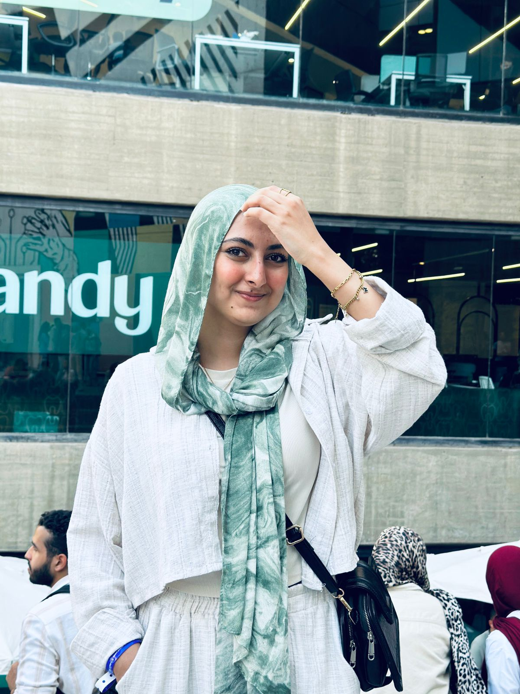
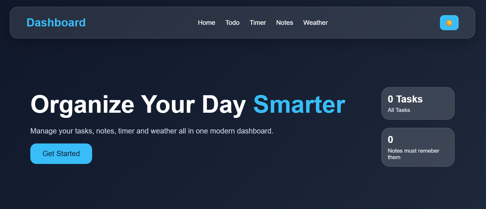
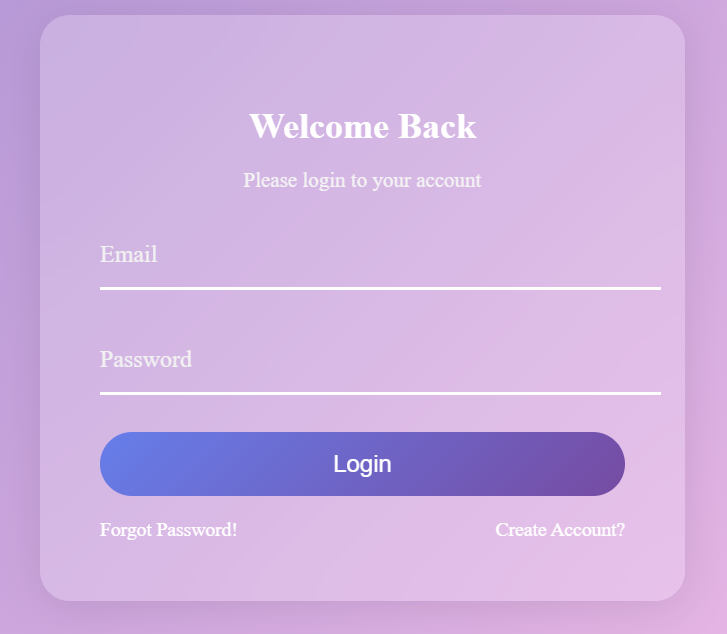
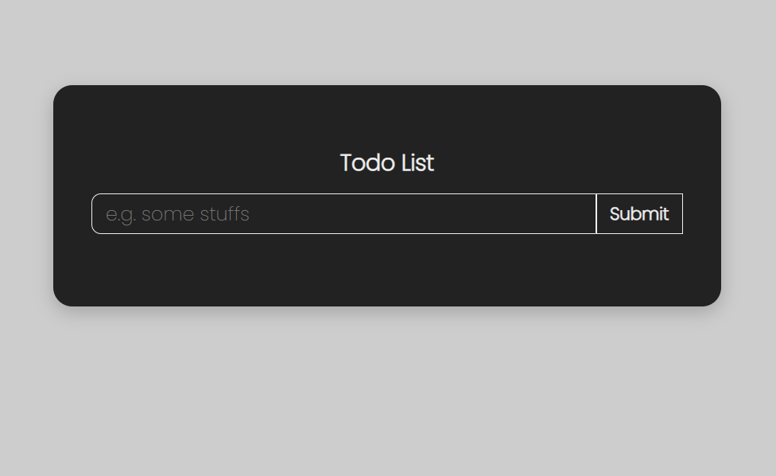
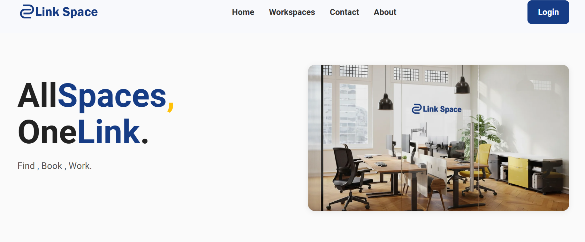

Fullstack Developer focused Front-End with an arts background, obsessed with creative UI, smooth interactions, and making websites feel alive.

I started from the art side first.
Colors, composition, details… basically judging every bad design I see.
Then I discovered programming and realized:
“wait… I can actually BUILD the things I imagine?”
Now I enjoy creating interactive web experiences that combine creativity with logic.
Currently focused on React, APIs, Front-End Development,
and Full-Stack fundamentals.
And yes…
I still fight with CSS sometimes.

Productivity app with notes, tasks, and weather updates — because being confused about life AND the weather is too much.

A simple authentication & CRUD flow project focused on handling data, APIs, and user interactions.

One of my first projects where I discovered that deleting tasks is easier than finishing them.

Front-end contribution for a workspace-style platform built with modern UI concepts and collaborative structure.
Whether it's a project, collaboration, or just talking about why CSS behaves like that.